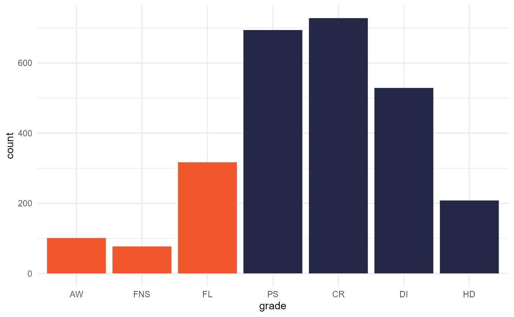
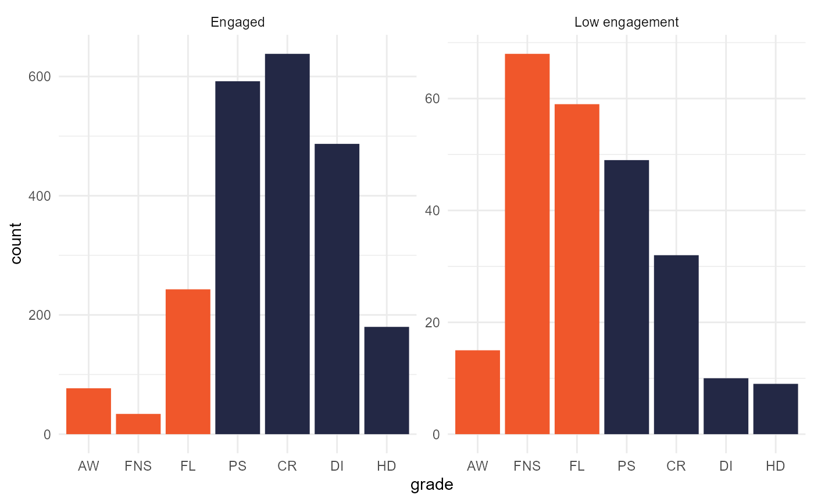
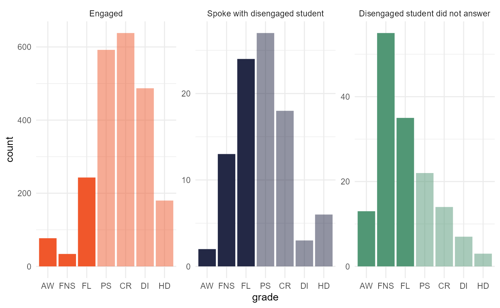
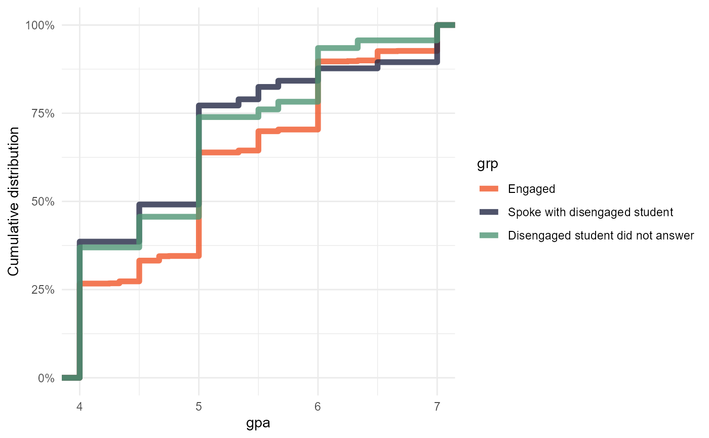
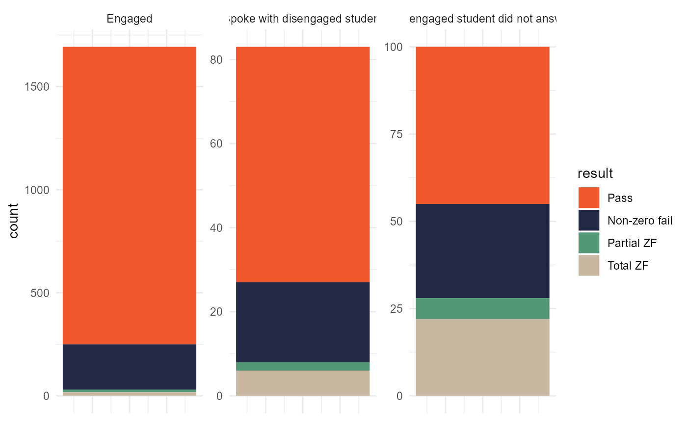

Visualisation
Visualisation.Rmd
library(retention.helpers)
library(tidyverse)
#> Warning: package 'tidyverse' was built under R version 4.2.2
#> ── Attaching packages ─────────────────────────────────────── tidyverse 1.3.2 ──
#> ✔ ggplot2 3.4.0 ✔ purrr 1.0.0
#> ✔ tibble 3.1.8 ✔ dplyr 1.0.10
#> ✔ tidyr 1.2.1 ✔ stringr 1.5.0
#> ✔ readr 2.1.3 ✔ forcats 0.5.2
#> Warning: package 'ggplot2' was built under R version 4.2.2
#> Warning: package 'tibble' was built under R version 4.2.2
#> Warning: package 'tidyr' was built under R version 4.2.2
#> Warning: package 'readr' was built under R version 4.2.2
#> Warning: package 'purrr' was built under R version 4.2.2
#> Warning: package 'dplyr' was built under R version 4.2.2
#> Warning: package 'stringr' was built under R version 4.2.2
#> Warning: package 'forcats' was built under R version 4.2.2
#> ── Conflicts ────────────────────────────────────────── tidyverse_conflicts() ──
#> ✖ dplyr::filter() masks stats::filter()
#> ✖ dplyr::lag() masks stats::lag()Renaming relevant toy data to names from the
data.csu.retention data package.
academic <- toy_academic_for_interventions
flags <- toy_flags
interventions <- toy_interventionsVisualising a grade distribution
We may like to display grade distributions of the academic data. The
data is already set up in factor levels for the major grades, and there
are also colour palettes to use; csu_colours,
csu_colours_dark and csu_colours_light.
Basic grade distribution in Charles Sturt colours
academic |>
add_grade_helpers() |>
filter(grade_substantive) |>
ggplot(aes(x = grade, fill = grade_success)) +
geom_histogram(stat = "count") +
theme_minimal() +
scale_fill_manual(values = csu_colours, guide = NULL)
#> Warning in geom_histogram(stat = "count"): Ignoring unknown parameters:
#> `binwidth`, `bins`, and `pad`
Using facets to compare grade distributions
We may also want to compare grade distributions of different groups.
For instance, the table flags and
interventions include data on students flagged for
some concern in the various campaigns, and the immediate results of the
intervention. The toy data included in this package is a simulated
sample based on a pre-census campaign were students are called if they
are flagged as ‘at-risk’. Some answer the phone call, and some do
not.
academic |>
inner_join( # only including subjects from the flags list
flags |>
distinct(subject)
) |>
left_join(
flags |>
mutate(flagged = TRUE)
) |>
mutate(flagged = replace_na(flagged, FALSE)) |>
mutate(grp = if_else(flagged, "Low engagement", "Engaged")) |>
add_grade_helpers() |>
filter(grade_substantive) |>
ggplot(aes(x = grade, fill = grade_success)) +
geom_histogram(stat = "count") +
theme_minimal() +
scale_fill_manual(values = csu_colours, guide = NULL) +
facet_wrap(~grp, scales = "free_y")
#> Joining, by = "subject"
#> Joining, by = c("id", "subject")
#> Warning in geom_histogram(stat = "count"): Ignoring unknown parameters:
#> `binwidth`, `bins`, and `pad`
academic |>
inner_join( # only including subjects from the flags list
flags |>
distinct(subject)
) |>
left_join(
flags |>
mutate(flagged = TRUE)
) |>
mutate(flagged = replace_na(flagged, FALSE)) |>
left_join(interventions) |>
mutate(grp = case_when(
!flagged ~ "Engaged",
intervention_result == "dialogue" ~ "Spoke with disengaged student",
intervention_result == "no dialogue" ~ "Disengaged student did not answer") |>
fct_relevel("Engaged", "Spoke with disengaged student")) |>
add_grade_helpers() |>
filter(grade_substantive) |>
ggplot(aes(x = grade, fill = grp, alpha = grade_success)) +
geom_histogram(stat = "count") +
theme_minimal() +
scale_fill_manual(values = csu_colours, guide = NULL) +
scale_alpha_discrete(range = c(1, 0.5), guide = NULL) +
facet_wrap(~grp, scales = "free_y")
#> Joining, by = "subject"
#> Joining, by = c("id", "subject")
#> Joining, by = "id"
#> Warning in geom_histogram(stat = "count"): Ignoring unknown parameters:
#> `binwidth`, `bins`, and `pad`
#> Warning: Using alpha for a discrete variable is not advised.
Aggregating grades for visualisation
The interventions (for the campaign in the toy data at least) are performed at a student-session level, but grades are reported at a student-session-subject level. As such it can be useful to aggregate grades from student-session-subject to student-session level.
# aggregating at student-session progress rate
academic_summary_1 <-
academic |>
mutate(session = "Session 1") |> # normally session would be included
group_by(id, session) |>
add_grade_helpers() |>
summarise(
progress_rate = sum(grade_success) / sum(grade_substantive),
gpa = gpa(grade)
) |>
ungroup()
#> `summarise()` has grouped output by 'id'. You can override using the `.groups`
#> argument.
academic_summary_1 |>
left_join(interventions) |>
mutate(grp = case_when(
is.na(intervention_result) ~ "Engaged",
intervention_result == "dialogue" ~ "Spoke with disengaged student",
intervention_result == "no dialogue" ~ "Disengaged student did not answer") |>
fct_relevel("Engaged", "Spoke with disengaged student"))|>
ggplot(aes(x = gpa, colour = grp)) +
stat_ecdf(size = 2, alpha = 0.8) +
scale_y_continuous(labels = scales::percent_format(),
name = "Cumulative distribution") +
theme_minimal() +
scale_color_manual(values = csu_colours)
#> Joining, by = "id"
#> Warning: Using `size` aesthetic for lines was deprecated in ggplot2 3.4.0.
#> ℹ Please use `linewidth` instead.
#> Warning: Removed 333 rows containing non-finite values (`stat_ecdf()`).
# aggregating by the custom `summarise_academic` function
academic_summary_2 <-
academic |>
mutate(session = "Session 1") |> # normally session would be included
group_by(id, session) |>
summarise_academic()
glimpse(academic_summary_2)
#> Rows: 1,876
#> Columns: 4
#> $ id <chr> "Student10", "Student1001", "Student1003", "Student1005", …
#> $ session <chr> "Session 1", "Session 1", "Session 1", "Session 1", "Sessi…
#> $ result_long <fct> Pass all, Pass all, Pass all, Passing (some non-zero fails…
#> $ result <fct> Pass, Pass, Pass, Pass, Pass, Pass, Pass, Pass, Pass, Non-…
academic_summary_2 |>
left_join(interventions) |>
mutate(grp = case_when(
is.na(intervention_result) ~ "Engaged",
intervention_result == "dialogue" ~ "Spoke with disengaged student",
intervention_result == "no dialogue" ~ "Disengaged student did not answer") |>
fct_relevel("Engaged", "Spoke with disengaged student"))|>
ggplot(aes(x = 1, fill = result)) +
geom_bar(stat = "count", position = "stack") +
facet_wrap(~grp, scales = "free_y") +
theme_minimal() +
theme(axis.text.x = element_blank(), axis.title.x = element_blank()) +
scale_fill_manual(values = csu_colours)
#> Joining, by = "id"